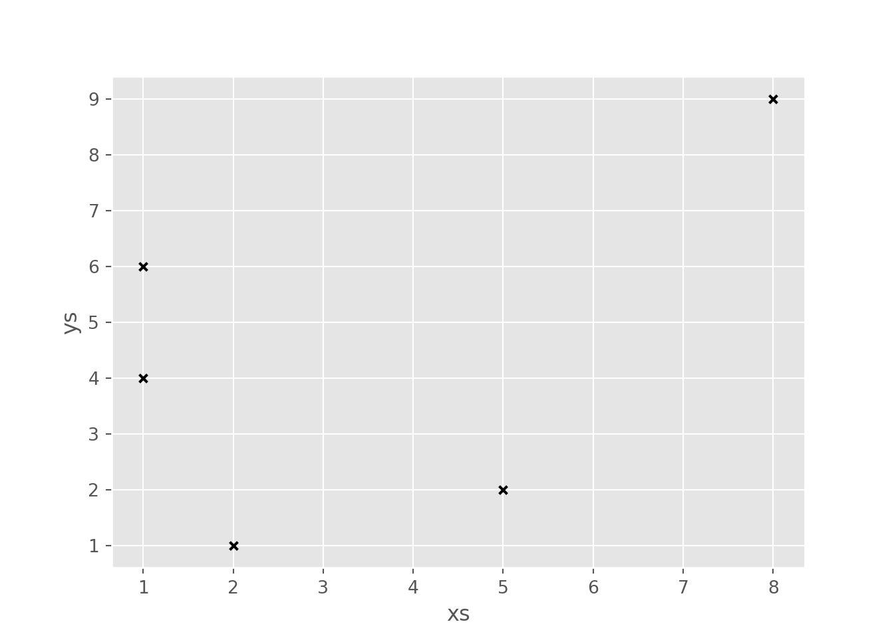
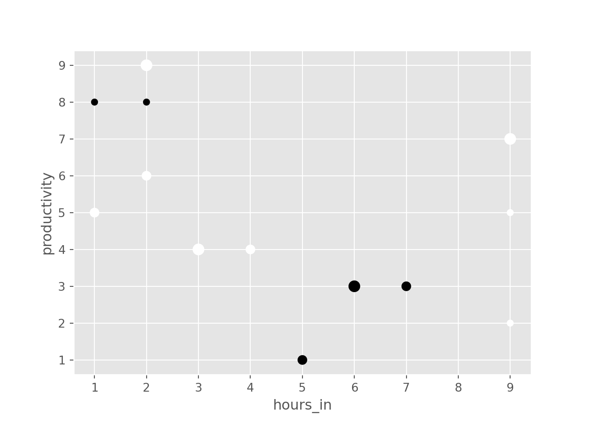
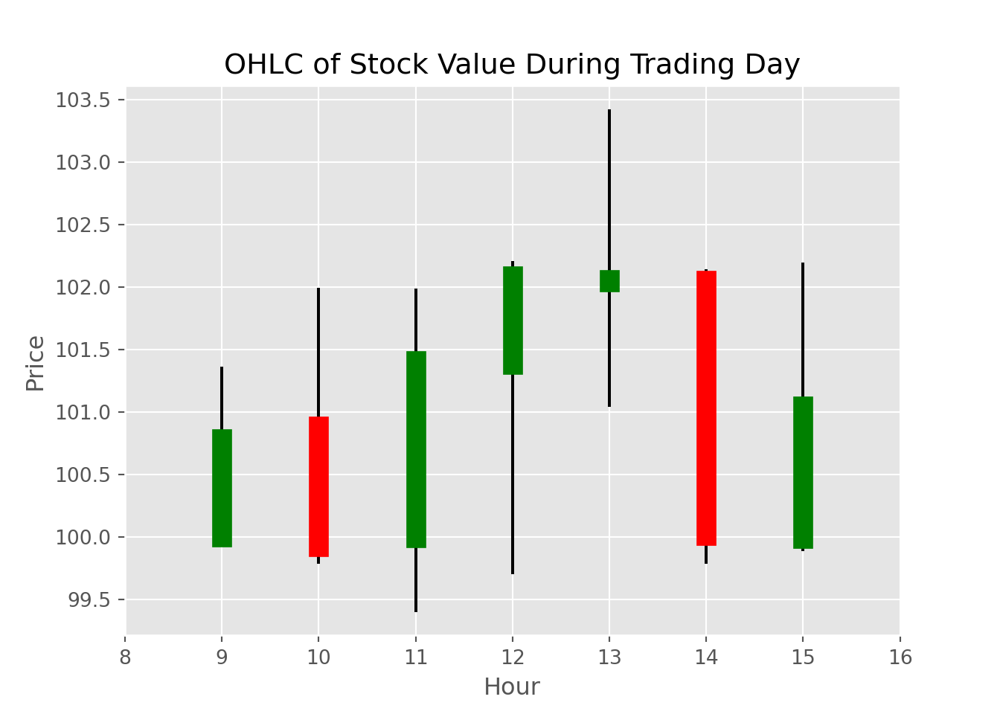

import pandas as pd100 pandas puzzles - ANSWER KEY
Inspired by 100 Numpy exerises, here are 100* short puzzles for testing your knowledge of pandas’ power.
Since pandas is a large library with many different specialist features and functions, these exercises focus mainly on the fundamentals of manipulating data (indexing, grouping, aggregating, cleaning), making use of the core DataFrame and Series objects.
Many of the exercises here are straight-forward in that the solutions require no more than a few lines of code (in pandas or NumPy… don’t go using pure Python or Cython!). Choosing the right methods and following best practices is the underlying goal.
The exercises are loosely divided in sections. Each section has a difficulty rating; these ratings are subjective, of course, but should be a seen as a rough guide as to how inventive the required solution is.
If you’re just starting out with pandas and you are looking for some other resources, the official documentation is very extensive. In particular, some good places to get a broader overview of pandas are…
Enjoy the puzzles!
* the list of exercises is not yet complete! Pull requests or suggestions for additional exercises, corrections and improvements are welcomed.
Importing pandas
Getting started and checking your pandas setup
Difficulty: easy
1. Import pandas under the alias pd.
2. Print the version of pandas that has been imported.
pd.__version__'1.5.2'3. Print out all the version information of the libraries that are required by the pandas library.
pd.show_versions()
INSTALLED VERSIONS
------------------
commit : 8dab54d6573f7186ff0c3b6364d5e4dd635ff3e7
python : 3.11.1.final.0
python-bits : 64
OS : Windows
OS-release : 10
Version : 10.0.22621
machine : AMD64
processor : Intel64 Family 6 Model 158 Stepping 10, GenuineIntel
byteorder : little
LC_ALL : None
LANG : None
LOCALE : English_United States.utf8
pandas : 1.5.2
numpy : 1.24.1
pytz : 2022.7
dateutil : 2.8.2
setuptools : 65.7.0
pip : 22.3.1
Cython : None
pytest : None
hypothesis : None
sphinx : None
blosc : None
feather : None
xlsxwriter : None
lxml.etree : None
html5lib : None
pymysql : None
psycopg2 : None
jinja2 : None
IPython : None
pandas_datareader: None
bs4 : None
bottleneck : None
brotli : None
fastparquet : None
fsspec : None
gcsfs : None
matplotlib : 3.6.2
numba : None
numexpr : None
odfpy : None
openpyxl : None
pandas_gbq : None
pyarrow : None
pyreadstat : None
pyxlsb : None
s3fs : None
scipy : 1.10.0
snappy : None
sqlalchemy : None
tables : None
tabulate : None
xarray : None
xlrd : None
xlwt : None
zstandard : None
tzdata : None
C:\Users\TimRu\Envs\pandas_puzzles_env\Lib\site-packages\_distutils_hack\__init__.py:33: UserWarning: Setuptools is replacing distutils.
warnings.warn("Setuptools is replacing distutils.")DataFrame basics
A few of the fundamental routines for selecting, sorting, adding and aggregating data in DataFrames
Difficulty: easy
Note: remember to import numpy using:
import numpy as npConsider the following Python dictionary data and Python list labels:
data = {'animal': ['cat', 'cat', 'snake', 'dog', 'dog', 'cat', 'snake', 'cat', 'dog', 'dog'],
'age': [2.5, 3, 0.5, np.nan, 5, 2, 4.5, np.nan, 7, 3],
'visits': [1, 3, 2, 3, 2, 3, 1, 1, 2, 1],
'priority': ['yes', 'yes', 'no', 'yes', 'no', 'no', 'no', 'yes', 'no', 'no']}
labels = ['a', 'b', 'c', 'd', 'e', 'f', 'g', 'h', 'i', 'j'](This is just some meaningless data I made up with the theme of animals and trips to a vet.)
4. Create a DataFrame df from this dictionary data which has the index labels.
import numpy as np
data = {'animal': ['cat', 'cat', 'snake', 'dog', 'dog', 'cat', 'snake', 'cat', 'dog', 'dog'],
'age': [2.5, 3, 0.5, np.nan, 5, 2, 4.5, np.nan, 7, 3],
'visits': [1, 3, 2, 3, 2, 3, 1, 1, 2, 1],
'priority': ['yes', 'yes', 'no', 'yes', 'no', 'no', 'no', 'yes', 'no', 'no']}
labels = ['a', 'b', 'c', 'd', 'e', 'f', 'g', 'h', 'i', 'j']
df = pd.DataFrame(data, index=labels)5. Display a summary of the basic information about this DataFrame and its data (hint: there is a single method that can be called on the DataFrame).
df.info()
# ...or...<class 'pandas.core.frame.DataFrame'>
Index: 10 entries, a to j
Data columns (total 4 columns):
# Column Non-Null Count Dtype
--- ------ -------------- -----
0 animal 10 non-null object
1 age 8 non-null float64
2 visits 10 non-null int64
3 priority 10 non-null object
dtypes: float64(1), int64(1), object(2)
memory usage: 400.0+ bytesdf.describe() age visits
count 8.000000 10.000000
mean 3.437500 1.900000
std 2.007797 0.875595
min 0.500000 1.000000
25% 2.375000 1.000000
50% 3.000000 2.000000
75% 4.625000 2.750000
max 7.000000 3.0000006. Return the first 3 rows of the DataFrame df.
df.iloc[:3]
# or equivalently animal age visits priority
a cat 2.5 1 yes
b cat 3.0 3 yes
c snake 0.5 2 nodf.head(3) animal age visits priority
a cat 2.5 1 yes
b cat 3.0 3 yes
c snake 0.5 2 no7. Select just the ‘animal’ and ‘age’ columns from the DataFrame df.
df.loc[:, ['animal', 'age']]
# or animal age
a cat 2.5
b cat 3.0
c snake 0.5
d dog NaN
e dog 5.0
f cat 2.0
g snake 4.5
h cat NaN
i dog 7.0
j dog 3.0df[['animal', 'age']] animal age
a cat 2.5
b cat 3.0
c snake 0.5
d dog NaN
e dog 5.0
f cat 2.0
g snake 4.5
h cat NaN
i dog 7.0
j dog 3.08. Select the data in rows [3, 4, 8] and in columns ['animal', 'age'].
df.loc[df.index[[3, 4, 8]], ['animal', 'age']] animal age
d dog NaN
e dog 5.0
i dog 7.09. Select only the rows where the number of visits is greater than 3.
df[df['visits'] > 3]Empty DataFrame
Columns: [animal, age, visits, priority]
Index: []10. Select the rows where the age is missing, i.e. it is NaN.
df[df['age'].isnull()] animal age visits priority
d dog NaN 3 yes
h cat NaN 1 yes11. Select the rows where the animal is a cat and the age is less than 3.
df[(df['animal'] == 'cat') & (df['age'] < 3)] animal age visits priority
a cat 2.5 1 yes
f cat 2.0 3 no12. Select the rows the age is between 2 and 4 (inclusive).
df[df['age'].between(2, 4)] animal age visits priority
a cat 2.5 1 yes
b cat 3.0 3 yes
f cat 2.0 3 no
j dog 3.0 1 no13. Change the age in row ‘f’ to 1.5.
df.loc['f', 'age'] = 1.514. Calculate the sum of all visits in df (i.e. the total number of visits).
df['visits'].sum()1915. Calculate the mean age for each different animal in df.
df.groupby('animal')['age'].mean()animal
cat 2.333333
dog 5.000000
snake 2.500000
Name: age, dtype: float6416. Append a new row ‘k’ to df with your choice of values for each column. Then delete that row to return the original DataFrame.
df.loc['k'] = ['dog', 5.5, 2, 'no']
# and then deleting the new row...
df = df.drop('k')17. Count the number of each type of animal in df.
df['animal'].value_counts()cat 4
dog 4
snake 2
Name: animal, dtype: int6418. Sort df first by the values in the ‘age’ in decending order, then by the value in the ‘visits’ column in ascending order (so row i should be first, and row d should be last).
df.sort_values(by=['age', 'visits'], ascending=[False, True]) animal age visits priority
i dog 7.0 2 no
e dog 5.0 2 no
g snake 4.5 1 no
j dog 3.0 1 no
b cat 3.0 3 yes
a cat 2.5 1 yes
f cat 1.5 3 no
c snake 0.5 2 no
h cat NaN 1 yes
d dog NaN 3 yes19. The ‘priority’ column contains the values ‘yes’ and ‘no’. Replace this column with a column of boolean values: ‘yes’ should be True and ‘no’ should be False.
df['priority'] = df['priority'].map({'yes': True, 'no': False})20. In the ‘animal’ column, change the ‘snake’ entries to ‘python’.
df['animal'] = df['animal'].replace('snake', 'python')21. For each animal type and each number of visits, find the mean age. In other words, each row is an animal, each column is a number of visits and the values are the mean ages (hint: use a pivot table).
df.pivot_table(index='animal', columns='visits', values='age', aggfunc='mean')visits 1 2 3
animal
cat 2.5 NaN 2.25
dog 3.0 6.0 NaN
python 4.5 0.5 NaNDataFrames: beyond the basics
Slightly trickier: you may need to combine two or more methods to get the right answer
Difficulty: medium
The previous section was tour through some basic but essential DataFrame operations. Below are some ways that you might need to cut your data, but for which there is no single “out of the box” method.
22. You have a DataFrame df with a column ‘A’ of integers. For example:
df = pd.DataFrame({'A': [1, 2, 2, 3, 4, 5, 5, 5, 6, 7, 7]})How do you filter out rows which contain the same integer as the row immediately above?
You should be left with a column containing the following values:
1, 2, 3, 4, 5, 6, 7df = pd.DataFrame({'A': [1, 2, 2, 3, 4, 5, 5, 5, 6, 7, 7]})
df.loc[df['A'].shift() != df['A']]
# Alternatively, we could use drop_duplicates() here. Note
# that this removes *all* duplicates though, so it won't
# work as desired if A is [1, 1, 2, 2, 1, 1] for example. A
0 1
1 2
3 3
4 4
5 5
8 6
9 7df.drop_duplicates(subset='A') A
0 1
1 2
3 3
4 4
5 5
8 6
9 723. Given a DataFrame of random numeric values:
df = pd.DataFrame(np.random.random(size=(5, 3))) # this is a 5x3 DataFrame of float valueshow do you subtract the row mean from each element in the row?
df = pd.DataFrame(np.random.random(size=(5, 3)))
df.sub(df.mean(axis=1), axis=0) 0 1 2
0 -0.152010 0.391882 -0.239872
1 -0.127929 0.149497 -0.021568
2 -0.203866 -0.027854 0.231720
3 -0.161241 0.190556 -0.029315
4 -0.468725 0.380788 0.08793724. Suppose you have DataFrame with 10 columns of real numbers, for example:
df = pd.DataFrame(np.random.random(size=(5, 10)), columns=list('abcdefghij'))Which column of numbers has the smallest sum? Return that column’s label.
df = pd.DataFrame(np.random.random(size=(5, 10)), columns=list('abcdefghij'))
df.sum().idxmin()'h'25. How do you count how many unique rows a DataFrame has (i.e. ignore all rows that are duplicates)?
df = pd.DataFrame(np.random.randint(0, 2, size=(10, 3)))
len(df) - df.duplicated(keep=False).sum()
# or perhaps more simply...2len(df.drop_duplicates(keep=False))2The next three puzzles are slightly harder.
26. In the cell below, you have a DataFrame df that consists of 10 columns of floating-point numbers. Exactly 5 entries in each row are NaN values.
For each row of the DataFrame, find the column which contains the third NaN value.
You should return a Series of column labels: e, c, d, h, d
nan = np.nan
data = [[0.04, nan, nan, 0.25, nan, 0.43, 0.71, 0.51, nan, nan],
[ nan, nan, nan, 0.04, 0.76, nan, nan, 0.67, 0.76, 0.16],
[ nan, nan, 0.5 , nan, 0.31, 0.4 , nan, nan, 0.24, 0.01],
[0.49, nan, nan, 0.62, 0.73, 0.26, 0.85, nan, nan, nan],
[ nan, nan, 0.41, nan, 0.05, nan, 0.61, nan, 0.48, 0.68]]
columns = list('abcdefghij')
df = pd.DataFrame(data, columns=columns)
(df.isnull().cumsum(axis=1) == 3).idxmax(axis=1)0 e
1 c
2 d
3 h
4 d
dtype: object27. A DataFrame has a column of groups ‘grps’ and and column of integer values ‘vals’:
df = pd.DataFrame({'grps': list('aaabbcaabcccbbc'),
'vals': [12,345,3,1,45,14,4,52,54,23,235,21,57,3,87]})For each group, find the sum of the three greatest values. You should end up with the answer as follows:
grps
a 409
b 156
c 345df = pd.DataFrame({'grps': list('aaabbcaabcccbbc'),
'vals': [12,345,3,1,45,14,4,52,54,23,235,21,57,3,87]})
df.groupby('grps')['vals'].nlargest(3).sum(level=0)grps
a 409
b 156
c 345
Name: vals, dtype: int64
<string>:1: FutureWarning: Using the level keyword in DataFrame and Series aggregations is deprecated and will be removed in a future version. Use groupby instead. df.sum(level=1) should use df.groupby(level=1).sum().28. The DataFrame df constructed below has two integer columns ‘A’ and ‘B’. The values in ‘A’ are between 1 and 100 (inclusive).
For each group of 10 consecutive integers in ‘A’ (i.e. (0, 10], (10, 20], …), calculate the sum of the corresponding values in column ‘B’.
The answer should be a Series as follows:
A
(0, 10] 635
(10, 20] 360
(20, 30] 315
(30, 40] 306
(40, 50] 750
(50, 60] 284
(60, 70] 424
(70, 80] 526
(80, 90] 835
(90, 100] 852df = pd.DataFrame(np.random.RandomState(8765).randint(1, 101, size=(100, 2)), columns = ["A", "B"])
df.groupby(pd.cut(df['A'], np.arange(0, 101, 10)))['B'].sum()A
(0, 10] 635
(10, 20] 360
(20, 30] 315
(30, 40] 306
(40, 50] 750
(50, 60] 284
(60, 70] 424
(70, 80] 526
(80, 90] 835
(90, 100] 852
Name: B, dtype: int32DataFrames: harder problems
These might require a bit of thinking outside the box…
…but all are solvable using just the usual pandas/NumPy methods (and so avoid using explicit for loops).
Difficulty: hard
29. Consider a DataFrame df where there is an integer column ‘X’:
df = pd.DataFrame({'X': [7, 2, 0, 3, 4, 2, 5, 0, 3, 4]})For each value, count the difference back to the previous zero (or the start of the Series, whichever is closer). These values should therefore be
[1, 2, 0, 1, 2, 3, 4, 0, 1, 2]Make this a new column ‘Y’.
df = pd.DataFrame({'X': [7, 2, 0, 3, 4, 2, 5, 0, 3, 4]})
izero = np.r_[-1, (df == 0).values.nonzero()[0]] # indices of zeros
idx = np.arange(len(df))
y = df['X'] != 0
df['Y'] = idx - izero[np.searchsorted(izero - 1, idx) - 1]
# http://stackoverflow.com/questions/30730981/how-to-count-distance-to-the-previous-zero-in-pandas-series/
# credit: Behzad NouriHere’s an alternative approach based on a cookbook recipe:
df = pd.DataFrame({'X': [7, 2, 0, 3, 4, 2, 5, 0, 3, 4]})
x = (df['X'] != 0).cumsum()
y = x != x.shift()
df['Y'] = y.groupby((y != y.shift()).cumsum()).cumsum()And another approach using a groupby operation:
df = pd.DataFrame({'X': [7, 2, 0, 3, 4, 2, 5, 0, 3, 4]})
df['Y'] = df.groupby((df['X'] == 0).cumsum()).cumcount()
# We're off by one before we reach the first zero.
first_zero_idx = (df['X'] == 0).idxmax()
df['Y'].iloc[0:first_zero_idx] += 130. Consider the DataFrame constructed below which contains rows and columns of numerical data.
Create a list of the column-row index locations of the 3 largest values in this DataFrame. In this case, the answer should be:
[(5, 7), (6, 4), (2, 5)]df = pd.DataFrame(np.random.RandomState(30).randint(1, 101, size=(8, 8)))
df.unstack().sort_values()[-3:].index.tolist()
# http://stackoverflow.com/questions/14941261/index-and-column-for-the-max-value-in-pandas-dataframe/
# credit: DSM[(5, 7), (6, 4), (2, 5)]31. You are given the DataFrame below with a column of group IDs, ‘grps’, and a column of corresponding integer values, ‘vals’.
df = pd.DataFrame({"vals": np.random.RandomState(31).randint(-30, 30, size=15),
"grps": np.random.RandomState(31).choice(["A", "B"], 15)})Create a new column ‘patched_values’ which contains the same values as the ‘vals’ any negative values in ‘vals’ with the group mean:
vals grps patched_vals
0 -12 A 13.6
1 -7 B 28.0
2 -14 A 13.6
3 4 A 4.0
4 -7 A 13.6
5 28 B 28.0
6 -2 A 13.6
7 -1 A 13.6
8 8 A 8.0
9 -2 B 28.0
10 28 A 28.0
11 12 A 12.0
12 16 A 16.0
13 -24 A 13.6
14 -12 A 13.6df = pd.DataFrame({"vals": np.random.RandomState(31).randint(-30, 30, size=15),
"grps": np.random.RandomState(31).choice(["A", "B"], 15)})
def replace(group):
mask = group<0
group[mask] = group[~mask].mean()
return group
df.groupby(['grps'])['vals'].transform(replace)
# http://stackoverflow.com/questions/14760757/replacing-values-with-groupby-means/
# credit: unutbu0 13.6
1 28.0
2 13.6
3 4.0
4 13.6
5 28.0
6 13.6
7 13.6
8 8.0
9 28.0
10 28.0
11 12.0
12 16.0
13 13.6
14 13.6
Name: vals, dtype: float6432. Implement a rolling mean over groups with window size 3, which ignores NaN value. For example consider the following DataFrame:
>>> df = pd.DataFrame({'group': list('aabbabbbabab'),
'value': [1, 2, 3, np.nan, 2, 3, np.nan, 1, 7, 3, np.nan, 8]})
>>> df
group value
0 a 1.0
1 a 2.0
2 b 3.0
3 b NaN
4 a 2.0
5 b 3.0
6 b NaN
7 b 1.0
8 a 7.0
9 b 3.0
10 a NaN
11 b 8.0The goal is to compute the Series:
0 1.000000
1 1.500000
2 3.000000
3 3.000000
4 1.666667
5 3.000000
6 3.000000
7 2.000000
8 3.666667
9 2.000000
10 4.500000
11 4.000000E.g. the first window of size three for group ‘b’ has values 3.0, NaN and 3.0 and occurs at row index 5. Instead of being NaN the value in the new column at this row index should be 3.0 (just the two non-NaN values are used to compute the mean (3+3)/2)
df = pd.DataFrame({'group': list('aabbabbbabab'),
'value': [1, 2, 3, np.nan, 2, 3, np.nan, 1, 7, 3, np.nan, 8]})
g1 = df.groupby(['group'])['value'] # group values
g2 = df.fillna(0).groupby(['group'])['value'] # fillna, then group values
s = g2.rolling(3, min_periods=1).sum() / g1.rolling(3, min_periods=1).count() # compute means
s.reset_index(level=0, drop=True).sort_index() # drop/sort index
# http://stackoverflow.com/questions/36988123/pandas-groupby-and-rolling-apply-ignoring-nans/0 1.000000
1 1.500000
2 3.000000
3 3.000000
4 1.666667
5 3.000000
6 3.000000
7 2.000000
8 3.666667
9 2.000000
10 4.500000
11 4.000000
Name: value, dtype: float64Series and DatetimeIndex
Exercises for creating and manipulating Series with datetime data
Difficulty: easy/medium
pandas is fantastic for working with dates and times. These puzzles explore some of this functionality.
33. Create a DatetimeIndex that contains each business day of 2015 and use it to index a Series of random numbers. Let’s call this Series s.
dti = pd.date_range(start='2015-01-01', end='2015-12-31', freq='B')
s = pd.Series(np.random.rand(len(dti)), index=dti)
s2015-01-01 0.535766
2015-01-02 0.991975
2015-01-05 0.717607
2015-01-06 0.657159
2015-01-07 0.859500
...
2015-12-25 0.799451
2015-12-28 0.633923
2015-12-29 0.884430
2015-12-30 0.205322
2015-12-31 0.617998
Freq: B, Length: 261, dtype: float6434. Find the sum of the values in s for every Wednesday.
s[s.index.weekday == 2].sum() 24.21916777778593435. For each calendar month in s, find the mean of values.
s.resample('M').mean()2015-01-31 0.584398
2015-02-28 0.428282
2015-03-31 0.587166
2015-04-30 0.473534
2015-05-31 0.539527
2015-06-30 0.536432
2015-07-31 0.504507
2015-08-31 0.412133
2015-09-30 0.326170
2015-10-31 0.584716
2015-11-30 0.485695
2015-12-31 0.480945
Freq: M, dtype: float6436. For each group of four consecutive calendar months in s, find the date on which the highest value occurred.
s.groupby(pd.Grouper(freq='4M')).idxmax()2015-01-31 2015-01-02
2015-05-31 2015-02-06
2015-09-30 2015-06-18
2016-01-31 2015-11-06
Freq: 4M, dtype: datetime64[ns]37. Create a DateTimeIndex consisting of the third Thursday in each month for the years 2015 and 2016.
pd.date_range('2015-01-01', '2016-12-31', freq='WOM-3THU')DatetimeIndex(['2015-01-15', '2015-02-19', '2015-03-19', '2015-04-16',
'2015-05-21', '2015-06-18', '2015-07-16', '2015-08-20',
'2015-09-17', '2015-10-15', '2015-11-19', '2015-12-17',
'2016-01-21', '2016-02-18', '2016-03-17', '2016-04-21',
'2016-05-19', '2016-06-16', '2016-07-21', '2016-08-18',
'2016-09-15', '2016-10-20', '2016-11-17', '2016-12-15'],
dtype='datetime64[ns]', freq='WOM-3THU')Cleaning Data
Making a DataFrame easier to work with
Difficulty: easy/medium
It happens all the time: someone gives you data containing malformed strings, Python, lists and missing data. How do you tidy it up so you can get on with the analysis?
Take this monstrosity as the DataFrame to use in the following puzzles:
df = pd.DataFrame({'From_To': ['LoNDon_paris', 'MAdrid_miLAN', 'londON_StockhOlm',
'Budapest_PaRis', 'Brussels_londOn'],
'FlightNumber': [10045, np.nan, 10065, np.nan, 10085],
'RecentDelays': [[23, 47], [], [24, 43, 87], [13], [67, 32]],
'Airline': ['KLM(!)', '<Air France> (12)', '(British Airways. )',
'12. Air France', '"Swiss Air"']})Formatted, it looks like this:
From_To FlightNumber RecentDelays Airline
0 LoNDon_paris 10045.0 [23, 47] KLM(!)
1 MAdrid_miLAN NaN [] <Air France> (12)
2 londON_StockhOlm 10065.0 [24, 43, 87] (British Airways. )
3 Budapest_PaRis NaN [13] 12. Air France
4 Brussels_londOn 10085.0 [67, 32] "Swiss Air"(It’s some flight data I made up; it’s not meant to be accurate in any way.)
38. Some values in the the FlightNumber column are missing (they are NaN). These numbers are meant to increase by 10 with each row so 10055 and 10075 need to be put in place. Modify df to fill in these missing numbers and make the column an integer column (instead of a float column).
df = pd.DataFrame({'From_To': ['LoNDon_paris', 'MAdrid_miLAN', 'londON_StockhOlm',
'Budapest_PaRis', 'Brussels_londOn'],
'FlightNumber': [10045, np.nan, 10065, np.nan, 10085],
'RecentDelays': [[23, 47], [], [24, 43, 87], [13], [67, 32]],
'Airline': ['KLM(!)', '<Air France> (12)', '(British Airways. )',
'12. Air France', '"Swiss Air"']})
df['FlightNumber'] = df['FlightNumber'].interpolate().astype(int)
df From_To FlightNumber RecentDelays Airline
0 LoNDon_paris 10045 [23, 47] KLM(!)
1 MAdrid_miLAN 10055 [] <Air France> (12)
2 londON_StockhOlm 10065 [24, 43, 87] (British Airways. )
3 Budapest_PaRis 10075 [13] 12. Air France
4 Brussels_londOn 10085 [67, 32] "Swiss Air"39. The From_To column would be better as two separate columns! Split each string on the underscore delimiter _ to give a new temporary DataFrame called ‘temp’ with the correct values. Assign the correct column names ‘From’ and ‘To’ to this temporary DataFrame.
temp = df.From_To.str.split('_', expand=True)
temp.columns = ['From', 'To']
temp From To
0 LoNDon paris
1 MAdrid miLAN
2 londON StockhOlm
3 Budapest PaRis
4 Brussels londOn40. Notice how the capitalisation of the city names is all mixed up in this temporary DataFrame ‘temp’. Standardise the strings so that only the first letter is uppercase (e.g. “londON” should become “London”.)
temp['From'] = temp['From'].str.capitalize()
temp['To'] = temp['To'].str.capitalize()
temp From To
0 London Paris
1 Madrid Milan
2 London Stockholm
3 Budapest Paris
4 Brussels London41. Delete the From_To column from 41. Delete the From_To column from df and attach the temporary DataFrame ‘temp’ from the previous questions.df and attach the temporary DataFrame from the previous questions.
df = df.drop('From_To', axis=1)
df = df.join(temp)
df FlightNumber RecentDelays Airline From To
0 10045 [23, 47] KLM(!) London Paris
1 10055 [] <Air France> (12) Madrid Milan
2 10065 [24, 43, 87] (British Airways. ) London Stockholm
3 10075 [13] 12. Air France Budapest Paris
4 10085 [67, 32] "Swiss Air" Brussels London42. In the Airline column, you can see some extra puctuation and symbols have appeared around the airline names. Pull out just the airline name. E.g. '(British Airways. )' should become 'British Airways'.
df['Airline'] = df['Airline'].str.extract('([a-zA-Z\s]+)', expand=False).str.strip()
# note: using .strip() gets rid of any leading/trailing spaces
df FlightNumber RecentDelays Airline From To
0 10045 [23, 47] KLM London Paris
1 10055 [] Air France Madrid Milan
2 10065 [24, 43, 87] British Airways London Stockholm
3 10075 [13] Air France Budapest Paris
4 10085 [67, 32] Swiss Air Brussels London43. In the RecentDelays column, the values have been entered into the DataFrame as a list. We would like each first value in its own column, each second value in its own column, and so on. If there isn’t an Nth value, the value should be NaN.
Expand the Series of lists into a new DataFrame named ‘delays’, rename the columns ‘delay_1’, ‘delay_2’, etc. and replace the unwanted RecentDelays column in df with ‘delays’.
# there are several ways to do this, but the following approach is possibly the simplest
delays = df['RecentDelays'].apply(pd.Series)<string>:1: FutureWarning: The default dtype for empty Series will be 'object' instead of 'float64' in a future version. Specify a dtype explicitly to silence this warning.delays.columns = ['delay_{}'.format(n) for n in range(1, len(delays.columns)+1)]
df = df.drop('RecentDelays', axis=1).join(delays)
df FlightNumber Airline From ... delay_1 delay_2 delay_3
0 10045 KLM London ... 23.0 47.0 NaN
1 10055 Air France Madrid ... NaN NaN NaN
2 10065 British Airways London ... 24.0 43.0 87.0
3 10075 Air France Budapest ... 13.0 NaN NaN
4 10085 Swiss Air Brussels ... 67.0 32.0 NaN
[5 rows x 7 columns]The DataFrame should look much better now:
FlightNumber Airline From To delay_1 delay_2 delay_3
0 10045 KLM London Paris 23.0 47.0 NaN
1 10055 Air France Madrid Milan NaN NaN NaN
2 10065 British Airways London Stockholm 24.0 43.0 87.0
3 10075 Air France Budapest Paris 13.0 NaN NaN
4 10085 Swiss Air Brussels London 67.0 32.0 NaNUsing MultiIndexes
Go beyond flat DataFrames with additional index levels
Difficulty: medium
Previous exercises have seen us analysing data from DataFrames equipped with a single index level. However, pandas also gives you the possibilty of indexing your data using multiple levels. This is very much like adding new dimensions to a Series or a DataFrame. For example, a Series is 1D, but by using a MultiIndex with 2 levels we gain of much the same functionality as a 2D DataFrame.
The set of puzzles below explores how you might use multiple index levels to enhance data analysis.
To warm up, we’ll look make a Series with two index levels.
44. Given the lists letters = ['A', 'B', 'C'] and numbers = list(range(10)), construct a MultiIndex object from the product of the two lists. Use it to index a Series of random numbers. Call this Series s.
letters = ['A', 'B', 'C']
numbers = list(range(10))
mi = pd.MultiIndex.from_product([letters, numbers])
s = pd.Series(np.random.rand(30), index=mi)
sA 0 0.893149
1 0.539152
2 0.035466
3 0.030398
4 0.107851
5 0.603202
6 0.683952
7 0.223994
8 0.762242
9 0.166278
B 0 0.477558
1 0.778628
2 0.610690
3 0.434587
4 0.749435
5 0.765942
6 0.446214
7 0.605228
8 0.113864
9 0.132961
C 0 0.042700
1 0.801607
2 0.846941
3 0.118249
4 0.324678
5 0.090105
6 0.853602
7 0.498609
8 0.760620
9 0.510909
dtype: float6445. Check the index of s is lexicographically sorted (this is a necessary proprty for indexing to work correctly with a MultiIndex).
s.index.is_lexsorted()
# or more verbosely...True
<string>:1: FutureWarning: MultiIndex.is_lexsorted is deprecated as a public function, users should use MultiIndex.is_monotonic_increasing instead.s.index.lexsort_depth == s.index.nlevelsTrue
<string>:1: FutureWarning: MultiIndex.lexsort_depth is deprecated as a public function, users should use MultiIndex.is_monotonic_increasing instead.46. Select the labels 1, 3 and 6 from the second level of the MultiIndexed Series.
s.loc[:, [1, 3, 6]]A 1 0.539152
3 0.030398
6 0.683952
B 1 0.778628
3 0.434587
6 0.446214
C 1 0.801607
3 0.118249
6 0.853602
dtype: float6447. Slice the Series s; slice up to label ‘B’ for the first level and from label 5 onwards for the second level.
s.loc[pd.IndexSlice[:'B', 5:]]
# or equivalently without IndexSlice...A 5 0.603202
6 0.683952
7 0.223994
8 0.762242
9 0.166278
B 5 0.765942
6 0.446214
7 0.605228
8 0.113864
9 0.132961
dtype: float64s.loc[slice(None, 'B'), slice(5, None)]A 5 0.603202
6 0.683952
7 0.223994
8 0.762242
9 0.166278
B 5 0.765942
6 0.446214
7 0.605228
8 0.113864
9 0.132961
dtype: float6448. Sum the values in s for each label in the first level (you should have Series giving you a total for labels A, B and C).
s.sum(level=0)A 4.045684
B 5.115107
C 4.848022
dtype: float64
<string>:1: FutureWarning: Using the level keyword in DataFrame and Series aggregations is deprecated and will be removed in a future version. Use groupby instead. df.sum(level=1) should use df.groupby(level=1).sum().49. Suppose that sum() (and other methods) did not accept a level keyword argument. How else could you perform the equivalent of s.sum(level=1)?
# One way is to use .unstack()...
# This method should convince you that s is essentially just a regular DataFrame in disguise!
s.unstack().sum(axis=0)0 1.413407
1 2.119387
2 1.493097
3 0.583235
4 1.181964
5 1.459249
6 1.983768
7 1.327831
8 1.636726
9 0.810149
dtype: float6450. Exchange the levels of the MultiIndex so we have an index of the form (letters, numbers). Is this new Series properly lexsorted? If not, sort it.
new_s = s.swaplevel(0, 1)
if not new_s.index.is_lexsorted():
new_s = new_s.sort_index()<string>:1: FutureWarning: MultiIndex.is_lexsorted is deprecated as a public function, users should use MultiIndex.is_monotonic_increasing instead.new_s0 A 0.893149
B 0.477558
C 0.042700
1 A 0.539152
B 0.778628
C 0.801607
2 A 0.035466
B 0.610690
C 0.846941
3 A 0.030398
B 0.434587
C 0.118249
4 A 0.107851
B 0.749435
C 0.324678
5 A 0.603202
B 0.765942
C 0.090105
6 A 0.683952
B 0.446214
C 0.853602
7 A 0.223994
B 0.605228
C 0.498609
8 A 0.762242
B 0.113864
C 0.760620
9 A 0.166278
B 0.132961
C 0.510909
dtype: float64Minesweeper
Generate the numbers for safe squares in a Minesweeper grid
Difficulty: medium to hard
If you’ve ever used an older version of Windows, there’s a good chance you’ve played with Minesweeper: - https://en.wikipedia.org/wiki/Minesweeper_(video_game)
If you’re not familiar with the game, imagine a grid of squares: some of these squares conceal a mine. If you click on a mine, you lose instantly. If you click on a safe square, you reveal a number telling you how many mines are found in the squares that are immediately adjacent. The aim of the game is to uncover all squares in the grid that do not contain a mine.
In this section, we’ll make a DataFrame that contains the necessary data for a game of Minesweeper: coordinates of the squares, whether the square contains a mine and the number of mines found on adjacent squares.
51. Let’s suppose we’re playing Minesweeper on a 5 by 4 grid, i.e.
X = 5
Y = 4To begin, generate a DataFrame df with two columns, 'x' and 'y' containing every coordinate for this grid. That is, the DataFrame should start:
x y
0 0 0
1 0 1
2 0 2
...X = 5
Y = 4
p = pd.core.reshape.util.cartesian_product([np.arange(X), np.arange(Y)])
df = pd.DataFrame(np.asarray(p).T, columns=['x', 'y'])
df x y
0 0 0
1 0 1
2 0 2
3 0 3
4 1 0
5 1 1
6 1 2
7 1 3
8 2 0
9 2 1
10 2 2
11 2 3
12 3 0
13 3 1
14 3 2
15 3 3
16 4 0
17 4 1
18 4 2
19 4 352. For this DataFrame df, create a new column of zeros (safe) and ones (mine). The probability of a mine occuring at each location should be 0.4.
# One way is to draw samples from a binomial distribution.
df['mine'] = np.random.binomial(1, 0.4, X*Y)
df x y mine
0 0 0 1
1 0 1 0
2 0 2 0
3 0 3 1
4 1 0 0
5 1 1 1
6 1 2 0
7 1 3 1
8 2 0 0
9 2 1 1
10 2 2 1
11 2 3 0
12 3 0 1
13 3 1 0
14 3 2 0
15 3 3 1
16 4 0 0
17 4 1 1
18 4 2 0
19 4 3 053. Now create a new column for this DataFrame called 'adjacent'. This column should contain the number of mines found on adjacent squares in the grid.
(E.g. for the first row, which is the entry for the coordinate (0, 0), count how many mines are found on the coordinates (0, 1), (1, 0) and (1, 1).)
# An alternative solution is to pivot the DataFrame
# to form the "actual" grid of mines and use convolution.
# See https://github.com/jakevdp/matplotlib_pydata2013/blob/master/examples/minesweeper.py
from scipy.signal import convolve2d
mine_grid = df.pivot_table(columns='x', index='y', values='mine')
counts = convolve2d(mine_grid.astype(complex), np.ones((3, 3)), mode='same').real.astype(int)
df['adjacent'] = np.ravel((counts - mine_grid), 'F')54. For rows of the DataFrame that contain a mine, set the value in the 'adjacent' column to NaN.
df.loc[df['mine'] == 1, 'adjacent'] = np.nan55. Finally, convert the DataFrame to grid of the adjacent mine counts: columns are the x coordinate, rows are the y coordinate.
df.drop('mine', axis=1).set_index(['y', 'x']).unstack() adjacent
x 0 1 2 3 4
y
0 NaN 3.0 3.0 NaN 2.0
1 2.0 NaN NaN 4.0 NaN
2 3.0 5.0 NaN 4.0 2.0
3 NaN NaN 3.0 NaN 1.0Plotting
Visualize trends and patterns in data
Difficulty: medium
To really get a good understanding of the data contained in your DataFrame, it is often essential to create plots: if you’re lucky, trends and anomalies will jump right out at you. This functionality is baked into pandas and the puzzles below explore some of what’s possible with the library.
56. Pandas is highly integrated with the plotting library matplotlib, and makes plotting DataFrames very user-friendly! Plotting in a notebook environment usually makes use of the following boilerplate:
import matplotlib.pyplot as plt
%matplotlib inline
plt.style.use('ggplot')matplotlib is the plotting library which pandas’ plotting functionality is built upon, and it is usually aliased to plt.
%matplotlib inline tells the notebook to show plots inline, instead of creating them in a separate window.
plt.style.use('ggplot') is a style theme that most people find agreeable, based upon the styling of R’s ggplot package.
For starters, make a scatter plot of this random data, but use black X’s instead of the default markers.
df = pd.DataFrame({"xs":[1,5,2,8,1], "ys":[4,2,1,9,6]})
Consult the documentation if you get stuck!
import matplotlib.pyplot as plt
plt.style.use('ggplot')
df = pd.DataFrame({"xs":[1,5,2,8,1], "ys":[4,2,1,9,6]})
df.plot.scatter("xs", "ys", color = "black", marker = "x")
57. Columns in your DataFrame can also be used to modify colors and sizes. Bill has been keeping track of his performance at work over time, as well as how good he was feeling that day, and whether he had a cup of coffee in the morning. Make a plot which incorporates all four features of this DataFrame.
(Hint: If you’re having trouble seeing the plot, try multiplying the Series which you choose to represent size by 10 or more)
The chart doesn’t have to be pretty: this isn’t a course in data viz!
df = pd.DataFrame({"productivity":[5,2,3,1,4,5,6,7,8,3,4,8,9],
"hours_in" :[1,9,6,5,3,9,2,9,1,7,4,2,2],
"happiness" :[2,1,3,2,3,1,2,3,1,2,2,1,3],
"caffienated" :[0,0,1,1,0,0,0,0,1,1,0,1,0]})df = pd.DataFrame({"productivity":[5,2,3,1,4,5,6,7,8,3,4,8,9],
"hours_in" :[1,9,6,5,3,9,2,9,1,7,4,2,2],
"happiness" :[2,1,3,2,3,1,2,3,1,2,2,1,3],
"caffienated" :[0,0,1,1,0,0,0,0,1,1,0,1,0]})
df.plot.scatter("hours_in", "productivity", s = df.happiness * 30, c = df.caffienated)
58. What if we want to plot multiple things? Pandas allows you to pass in a matplotlib Axis object for plots, and plots will also return an Axis object.
Make a bar plot of monthly revenue with a line plot of monthly advertising spending (numbers in millions)
df = pd.DataFrame({"revenue":[57,68,63,71,72,90,80,62,59,51,47,52],
"advertising":[2.1,1.9,2.7,3.0,3.6,3.2,2.7,2.4,1.8,1.6,1.3,1.9],
"month":range(12)
})df = pd.DataFrame({"revenue":[57,68,63,71,72,90,80,62,59,51,47,52],
"advertising":[2.1,1.9,2.7,3.0,3.6,3.2,2.7,2.4,1.8,1.6,1.3,1.9],
"month":range(12)
})
ax = df.plot.bar("month", "revenue", color = "green")
df.plot.line("month", "advertising", secondary_y = True, ax = ax)
ax.set_xlim((-1,12))(-1.0, 12.0)Now we’re finally ready to create a candlestick chart, which is a very common tool used to analyze stock price data. A candlestick chart shows the opening, closing, highest, and lowest price for a stock during a time window. The color of the “candle” (the thick part of the bar) is green if the stock closed above its opening price, or red if below.

This was initially designed to be a pandas plotting challenge, but it just so happens that this type of plot is just not feasible using pandas’ methods. If you are unfamiliar with matplotlib, we have provided a function that will plot the chart for you so long as you can use pandas to get the data into the correct format.
Your first step should be to get the data in the correct format using pandas’ time-series grouping function. We would like each candle to represent an hour’s worth of data. You can write your own aggregation function which returns the open/high/low/close, but pandas has a built-in which also does this.
The below cell contains helper functions. Call day_stock_data() to generate a DataFrame containing the prices a hypothetical stock sold for, and the time the sale occurred. Call plot_candlestick(df) on your properly aggregated and formatted stock data to print the candlestick chart.
#This function is designed to create semi-interesting random stock price data
import numpy as np
def float_to_time(x):
return str(int(x)) + ":" + str(int(x%1 * 60)).zfill(2) + ":" + str(int(x*60 % 1 * 60)).zfill(2)
def day_stock_data():
#NYSE is open from 9:30 to 4:00
time = 9.5
price = 100
results = [(float_to_time(time), price)]
while time < 16:
elapsed = np.random.exponential(.001)
time += elapsed
if time > 16:
break
price_diff = np.random.uniform(.999, 1.001)
price *= price_diff
results.append((float_to_time(time), price))
df = pd.DataFrame(results, columns = ['time','price'])
df.time = pd.to_datetime(df.time)
return df
def plot_candlestick(agg):
fig, ax = plt.subplots()
for time in agg.index:
ax.plot([time.hour] * 2, agg.loc[time, ["high","low"]].values, color = "black")
ax.plot([time.hour] * 2, agg.loc[time, ["open","close"]].values, color = agg.loc[time, "color"], linewidth = 10)
ax.set_xlim((8,16))
ax.set_ylabel("Price")
ax.set_xlabel("Hour")
ax.set_title("OHLC of Stock Value During Trading Day")
plt.show()59. Generate a day’s worth of random stock data, and aggregate / reformat it so that it has hourly summaries of the opening, highest, lowest, and closing prices
df = day_stock_data()
df.head() time price
0 2023-01-11 09:30:00 100.000000
1 2023-01-11 09:30:01 100.020503
2 2023-01-11 09:30:03 100.103199
3 2023-01-11 09:30:06 100.165742
4 2023-01-11 09:30:08 100.151702df.set_index("time", inplace = True)
agg = df.resample("H").ohlc()
agg.columns = agg.columns.droplevel()
agg["color"] = (agg.close > agg.open).map({True:"green",False:"red"})
agg.head() open high low close color
time
2023-01-11 09:00:00 100.000000 101.352960 99.949247 100.787522 green
2023-01-11 10:00:00 100.887983 101.983864 99.799589 99.924473 red
2023-01-11 11:00:00 99.997275 101.979769 99.413183 101.412646 green
2023-01-11 12:00:00 101.385543 102.196843 99.718313 102.090381 green
2023-01-11 13:00:00 102.046339 103.414702 101.057636 102.062484 green60. Now that you have your properly-formatted data, try to plot it yourself as a candlestick chart. Use the plot_candlestick(df) function above, or matplotlib’s plot documentation if you get stuck.
plot_candlestick(agg)
More exercises to follow soon…